1941–1943 гг. — введены
в эксплуатацию мартеновские
печи № 3, 4, 5, 6
ДМЗ ИМ. ПЕТРОВСКОГО
8 августа 1941 года
завод остановился, началась эвакуация24 августа 1941 года
взорваны мартеновские печии другие агрегаты
25 августа 1941 года
город оккупирован
По приказу вражеского командования
завод был заминирован и 25 октября
превратился в руины. Подпольной орга-
низации удалось разминировать ТЭЦ,
обеспечивавшую светом
и водой жителей города.
завод был заминирован и 25 октября
превратился в руины. Подпольной орга-
низации удалось разминировать ТЭЦ,
обеспечивавшую светом
и водой жителей города.
В октябре 1943 года
советские войска освободили Днепропетровск
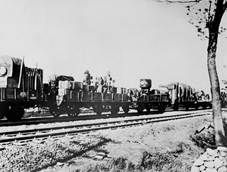
Подпольная организация
Подпольная организация
ДМЗ им. Петровского:
- Юрий Савченко — организатор,
бывший работник железнодорожного цеха - Василий Кириленко
- Михаил Котляр
- Виктор Тарнопольский
- Сергей Морщавка
Эвакуация завода
Оборудование эвакуи-
ровалось на Чусовской,
Гуръевский, Орско-Хали-
ловский, Кузнецкий
и Магнитогорский
металлургические
комбинаты
ровалось на Чусовской,
Гуръевский, Орско-Хали-
ловский, Кузнецкий
и Магнитогорский
металлургические
комбинаты
18 083 жителя Днепропетровска
погибли на фронтах Великой
Отечественной войны
погибли на фронтах Великой
Отечественной войны
17 263 человека пропали
без вести
без вести
РУДНИК СУХА БАЛКА
Восстановление разрушенной галереи рудника Суха Балка
С августа 1941 года добыча руды не велась. Оборудование было частично демонтировано
и взорвано, шахты затоплены.
В феврале 1944 года Криворожский бассейн был освобождён от гитлеровских войск. На шахте начались восстановительные работы.
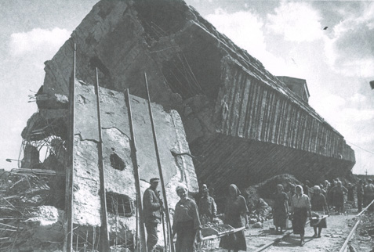
Нижний Тагил
НТМЗ
в военные годы активно строится
Тула
31 октября 1941 года — наступление гитлеровских войск на Тулу (операция «Тайфун»). 43 дня тульские рабочие и милиция держали оборону и отбили врага
Новокузнецк
КМК
>100 промышленных объектов введены в строй
за первые три года войны
•••
~ 100 тыс. эвакуированных граждан принял город
Находка
Строительство торгового порта прервано.
не вернулись
•••
~1500 находкинцев призваны на фронт, более половины
не вернулись
Днепропетровск
Кривой рог
НовоТАГИЛЬСКИЙ МЕТАЛЛУРГИЧЕСКИЙ ЗАВОД
Производство
НТМЗ, основанный 25 июня 1940 года
в военные годы активно строится:
в военные годы активно строится:
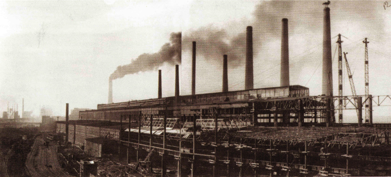
Мартеновский цех № 2, 1943 год
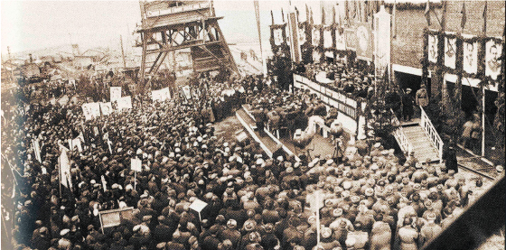
В 1944 году запущена
доменная печь № 3
производительностью
400 тыс. тонн чугуна в год
доменная печь № 3
производительностью
400 тыс. тонн чугуна в год
Торжественный митинг, посвященный пуску домны № 3, 1944 год
За годы войны металлурги НТМЗ дали стране,
млн тонн:
млн тонн:
Чугуна: 4,2
Стали: 0,9
Проката: 0,5
Продукция для нужд фронта
1/3
всей брони
для танков
производилась
на НТМЗ
всей брони
для танков
производилась
на НТМЗ
25 танков «Т-34»
производства Уралвагонзавода впервые отправляются на фронт уже
20 декабря 1941 года, броневая сталь для них выплавлена
и прокатана на НТМЗ
производства Уралвагонзавода впервые отправляются на фронт уже
20 декабря 1941 года, броневая сталь для них выплавлена
и прокатана на НТМЗ
В конце 1941 года бандажный стан стал производить поворотные круги для танковых башен
В сентябре 1941 года начал работу стан «3000», который производил броневой лист для танков
Толстолистовой броневой стан, 1941 год
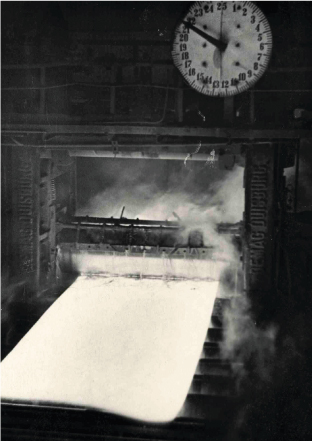
Группа работников ново-механического цеха НТМЗ
с продукцией военного времени
с продукцией военного времени
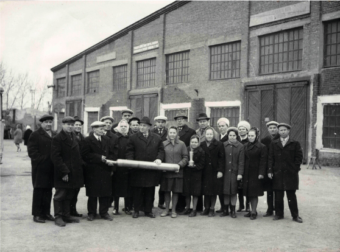
30 тысяч
реактивных снарядов для «Катюш»
было произведено
за 4 года
на НТМЗ
реактивных снарядов для «Катюш»
было произведено
за 4 года
на НТМЗ
В августе 1942 года на коксохимпроизводстве была смонтирована установка для получения легких пиридиновых оснований – сырья для производства сульфидина, сильнодействующего медикамента, спасшего в годы войны жизни многих людей
Производство
На курсах по подготовке кадров женщины осваивали мужские профессии — шоферов, помощников машинистов, электриков
Ирина Николаева,
Нина Шмакова,
Евфросинья Шуйских стали подручными сталевара. Фелисата Шарунова встала
к горну доменной печи
Нина Шмакова,
Евфросинья Шуйских стали подручными сталевара. Фелисата Шарунова встала
к горну доменной печи
68 фронтовых комсомольско-молодежных бригад работало на заводе в 1943 году
Рабочие трудились по 12-14 часов
в сутки, часто не уходили домой, отдыхали на рабочих местах
в сутки, часто не уходили домой, отдыхали на рабочих местах
Фронт
По инициативе тагильских металлургов в начале 1943 года создан Уральский добровольческий танковый корпус
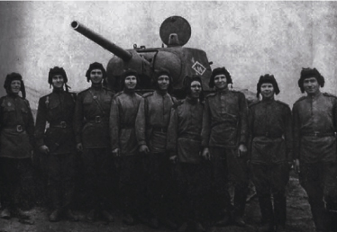

В корпус было отобрано 9660 человек из 115 тысяч подавших заявление
Комсомольский актив Уральского Добровольческого Танкового Корпуса, 1943 год
Корпус был оснащён оружием и техникой, которые трудящиеся изготовили сверх плана
и на средства, полученные от добровольных взносов
и на средства, полученные от добровольных взносов
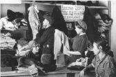
Металлурги Нижнего Тагила принимали активное участие в формировании танковых колонн «Новотагильский металлург», «Металлург Урала», собирали деньги на самолет «Новотагильский металлург»
3 000
металлургов НТМЗ
ушли на фронт
ушли на фронт
~100
из них участвовали в штурме Берлина
ШАХТЫ ОСИННИКОВСКОГО РУДНИКА
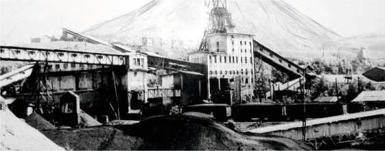
на фронт только
в первый год войны
8 000
осинниковцев ушлина фронт только
в первый год войны
Главный ствол шахты «Капитальная-1» (будущая «Осинниковская», сегодня входит в Распадскую угольную компанию)
120
работников шахты «Капитальная-1»
было отправлено на фронт
только за 1 день в 1941 году
В первый год войны
на участке № 12 шахты «Капитальная-1» была организована комсомольско-молодежная бригада
во главе с Михаилом Плоцким
на участке № 12 шахты «Капитальная-1» была организована комсомольско-молодежная бригада
во главе с Михаилом Плоцким
10–11 тонн угля
в день выдавали мо-
лодые горно-рабочие
(при норме 6–7 тонн)
в день выдавали мо-
лодые горно-рабочие
(при норме 6–7 тонн)
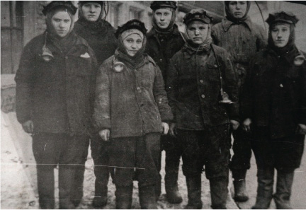
200 г хлеба, 50 г сала и 10 г сахара — такие завтраки выдавались летом 1943 года подземным рабочим шахт Кузбасса, добывающим коксующиеся марки углей
и выполняющим нормы выработки ≥80%
и выполняющим нормы выработки ≥80%
Женщины-шахтеры шахты «Капитальная-1», 1943 год
Уровень добычи угля на шахтах
с 1940 по 1945 годы
(млн тонн в год)
с 1940 по 1945 годы
(млн тонн в год)
12 300 млн тонн угля
дали шахты стране за 5 лет войны
дали шахты стране за 5 лет войны
6 млн тонн
коксующегося угля марки Ж было отгружено за годы войны для нужд фронта, промышленности
и народного хозяйства шахтой «Капитальная-1»
и народного хозяйства шахтой «Капитальная-1»
Свернуть раздел
РУДНИКИ ГОРНОЙ ШОРИИ
Все 1418 военных дней горняки Горной Шории работали без выходных.
9 мая, День Победы, был их превым выходным с начала войны
9 мая, День Победы, был их превым выходным с начала войны
Гурьевский рудник
663 тонны товарного известняка
на одного трудящегося составила
производительность труда в 1942 году
на одного трудящегося составила
производительность труда в 1942 году
Чугунашский кварцитный рудник
110 тысяч рублей перечислили работники
на строительство танковой колонны
в 1944 году. Коллектив получил благодарность
Верховного Главнокомандующего СССР
на строительство танковой колонны
в 1944 году. Коллектив получил благодарность
Верховного Главнокомандующего СССР
Рудник Темиртау
производственного плана
ежемесячно выполняла комсомольско-
молодежная бригада бурильщиков
под руководством Н. Семкина
ежемесячно выполняла комсомольско-
молодежная бригада бурильщиков
под руководством Н. Семкина
Таштагольский рудник
Увеличение производительности труда в военные годы,
тыс. тонн руды в месяц
тыс. тонн руды в месяц
145 тонн руды
в смену вместо 45 тонн
отгружал В. Попов
в смену вместо 45 тонн
отгружал В. Попов
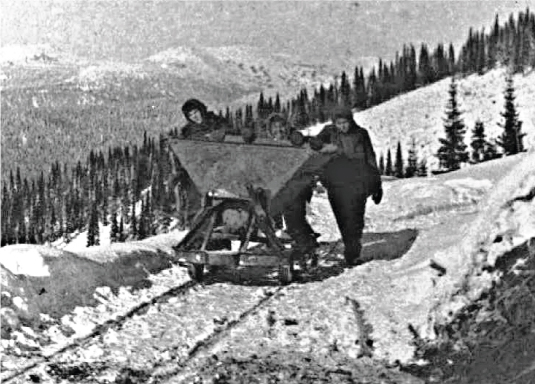
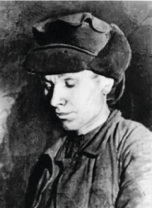
В 1942 году началось соревнование
на выполнение 200% нормы — за себя
и за товарища, ушедшего
на фронт. Инициатором движения «двухсотников» стал проходчик Василий Стариков
на выполнение 200% нормы — за себя
и за товарища, ушедшего
на фронт. Инициатором движения «двухсотников» стал проходчик Василий Стариков
Таштагольский рудник, 1941 год
Василий Стариков
1,62 млн тонн железной руды
добыто за годы войны
добыто за годы войны
3 июля 1941 года на КМК отправили
первый эшелон железной руды Таштагола
первый эшелон железной руды Таштагола
Свернуть раздел
КУЗНЕЦКИЙ МЕТАЛЛУРГИЧЕСКИЙ КОМБИНАТ
Производство
В кратчайшие сроки печи и прокатные станы завода были приспособлены к выпуску брони.
На 190% выполнили кузнецкие металлурги задание Госкомитета обороны страны
на поставку брони в 1941 году
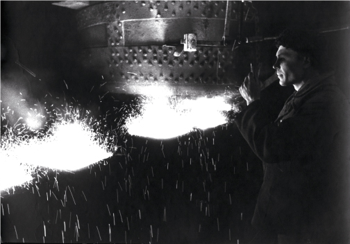
на поставку брони в 1941 году
Лозунг
мартеновцев:
мартеновцев:
Скоростные плавки двинем,
Сталь кузнецкая крепка.
Получай, фашист, «гостинец»
Нашей марки КМК!
Сталь кузнецкая крепка.
Получай, фашист, «гостинец»
Нашей марки КМК!
При выплавке броневой стали использовалась подбитая немецкая техника, гильзы, патроны. Все это перерабатывали на металлолом. Иногда он взрывался, были случаи ранений металлургов.
Разливка бронеметалла
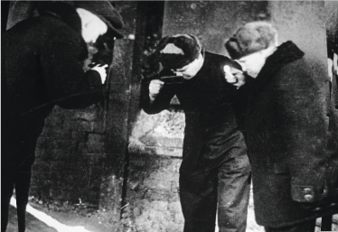
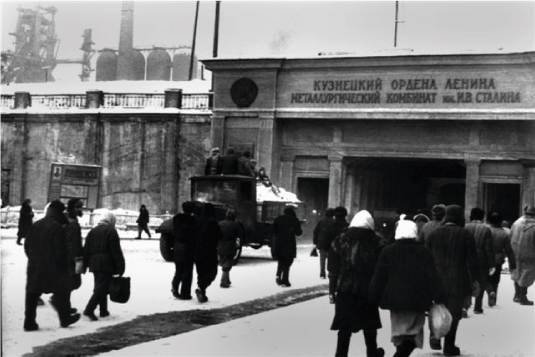
Металлурги КМК рассматривают пробу броневой стали
Проходная Кузнецкого металлургиче-
ского комбината имени И.В.Сталина,
1943 год
ского комбината имени И.В.Сталина,
1943 год
Вырезка из газеты о выплавке первой бронестали
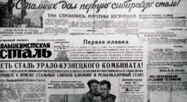
За годы войны КМК произвел,
млн тонн:
млн тонн:
Освоено
производство
70 новых марок стали
производство
70 новых марок стали
Чугуна: 6
Стали: 8
Проката: 5
1/3
общего
производства
в стране
производства
в стране
Продукция для нужд фронта
45 000 самолетов
Каждый 3-й был одет в броню производства КМК.
Эти штурмовики получили прозвище
«летающий танк» за своё хорошее
бронирование и мощное вооружение
Эти штурмовики получили прозвище
«летающий танк» за своё хорошее
бронирование и мощное вооружение
1942 год – впервые
в черной металлургии
на рельсобалочном стане «900»
освоено массовое производство
броневого металла для танков
и авиации
в черной металлургии
на рельсобалочном стане «900»
освоено массовое производство
броневого металла для танков
и авиации
50 000 танков
«Т-34» и «КВ»
«Т-34» и «КВ»
Каждый 2-й был одет
в кузнецкую броню.
7 тыс. тонн в месяц составляло
производство бронелиста
к 1944 году (это вес
269 танков «Т-З4»)
в кузнецкую броню.
7 тыс. тонн в месяц составляло
производство бронелиста
к 1944 году (это вес
269 танков «Т-З4»)
Противноминное днище
каждого танка было
сделано из брони КМК
каждого танка было
сделано из брони КМК
Котелки, саперные лопаты,
ножи для партизанских
отрядов
ножи для партизанских
отрядов
100 млн
снарядов
снарядов
Каждый 4-й снаряд
отлит из сибирской
стали
отлит из сибирской
стали
Символ г. Новокузнецк —
танк Т-34 № 114 (вес — 34 тонны),
установленный в 1973 году
на площади Побед, у здания заводо-
управления КМК, потерял
2 экипажа, 2 раза был подбит
танк Т-34 № 114 (вес — 34 тонны),
установленный в 1973 году
на площади Побед, у здания заводо-
управления КМК, потерял
2 экипажа, 2 раза был подбит
Для улучшения противопульной
и противоснарядной защиты броневые
листы располагались под наклоном:
и противоснарядной защиты броневые
листы располагались под наклоном:
Чтобы пробить расположенную
так броню, снаряду нужно
пройти более длинный путь.
так броню, снаряду нужно
пройти более длинный путь.
Чем больше наклон броневого
листа, тем выше вероятность
рикошета.
листа, тем выше вероятность
рикошета.
Защищенность машины повысилась
без утолщения брони, а значит,
без увеличения массы танка.
без утолщения брони, а значит,
без увеличения массы танка.
Трудовой подвиг
Почти в два раза увеличился
процент женщин, работавших
на КМК в годы войны:
процент женщин, работавших
на КМК в годы войны:
1944
1940
%
осваивали на кратко-срочных
курсах мужские профессии:
люковой, машинист паровых
турбин, мостовых кранов,
постов управления агрегатами
в прокатных цехах, токарь
В 1942 году бригада Александра Чалкова
сварила 45 скоростных плавок и выдала
3 860 тонн броневой стали сверх плана.
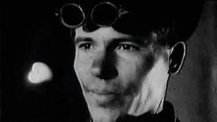
сварила 45 скоростных плавок и выдала
3 860 тонн броневой стали сверх плана.
Чалков догадался добавить
в плавильную печь перед кипением
руду и смесь формовочной земли,
силикатов и кокса. Плавка ускори-
лась на 7 часов (с 18 до 11 часов)
в плавильную печь перед кипением
руду и смесь формовочной земли,
силикатов и кокса. Плавка ускори-
лась на 7 часов (с 18 до 11 часов)
Сталевар Александр Чалков
Кадыкова Екатерина Николаевна — машинист паровоза ЖДЦ
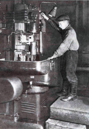
44,5% продукции
в 1944 году было
выдано молодыми
рабочими
в 1944 году было
выдано молодыми
рабочими
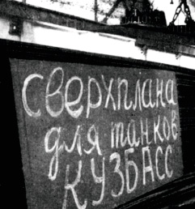
74,8 тыс. тонн чугуна,
53 тыс. тонн стали
и 66 тыс. тонн проката
сверх плана выпустили
комсомольцы за годы войны
53 тыс. тонн стали
и 66 тыс. тонн проката
сверх плана выпустили
комсомольцы за годы войны
В 3 раза увеличилось
за годы войны
число работников
в возрасте до 25 лет
за годы войны
число работников
в возрасте до 25 лет
Многие подростки
>были малы ростом
и работали у станков
на подставках
30–40 см высотой
>были малы ростом
и работали у станков
на подставках
30–40 см высотой
Кузнецкая броня
Фронт
>6 000
металлургов КМК
ушли на фронт
ушли на фронт
2 789
человек
не вернулись
не вернулись